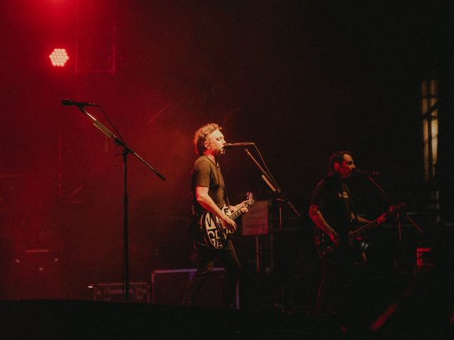
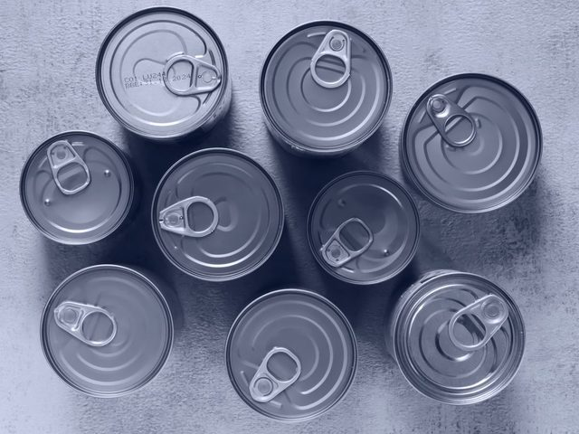
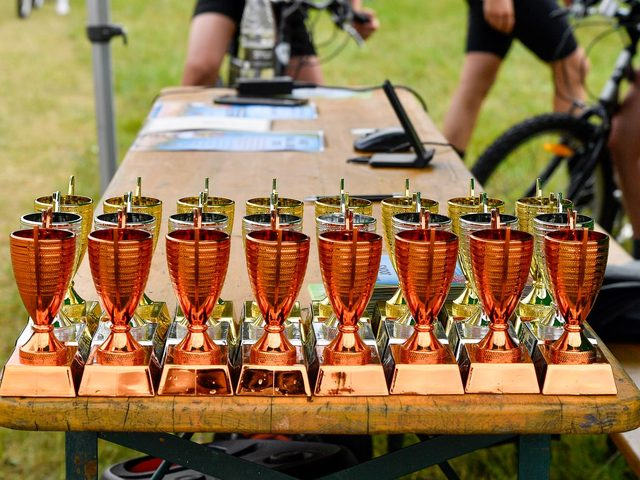
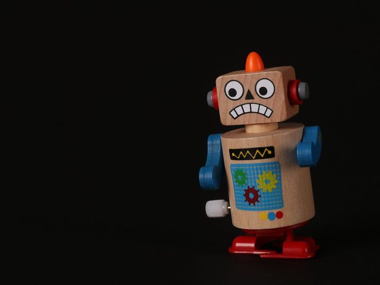
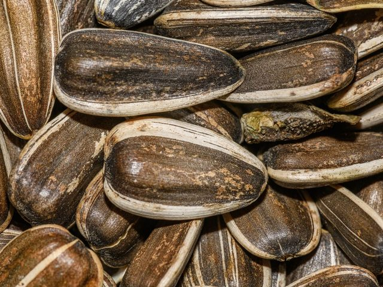
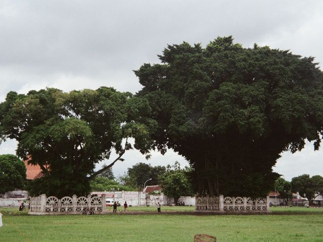

UNIT 34 · VOCABULARY
其他名詞
Other nouns
111 個單字聽・唸・用
本單元單字一覽
前面主題沒有收的常用名詞，共 111 個，分量比較多，可以分幾次背。注意哪些不可數：fun、garbage、gas、honey、mail、mud、news、trash…
actionageAmericanbandbellbirthdayblankbottomboxcancasecastlecellphonecenterchancecheerchoiceclubcornerdreame-mailerroreveexcuseexperiencefactfilefireforeignerflowerfungarbagegasghostgiftgodgrassgroundgrouphabitheathoneyideainterestInternetinterviewitemjokejoykindleaderlevelmailmattermeetingmembermetromindmistakemudnewsnewspapernoisenoteorderpartyphotopinpipeplanetplayerpleasurepowerprizeprogramreasonreportrobotrockrootroperoserulesalescreenseatseedsentenceservicesetsidesightsmilespacestorystringsubjectswingthingtickettiptooltopictrashtreattreetricktroublevoicewayword
每個字都有 🔊，先聽發音、跟著唸，再看例句。
單字 1–4
🎬
action
行動n.
We need to take action now.
我們現在必須採取行動。
我們現在必須採取行動。
🎂
age
年齡n.
What is the age of that old temple?
那座老廟有多少年歷史了？
那座老廟有多少年歷史了？
🗽
American
美國人；美國的n./adj.
His father is American.
他爸爸是美國人。
他爸爸是美國人。

band
樂團n.
My brother plays the drums in a band.
我哥哥在樂團裡打鼓。
我哥哥在樂團裡打鼓。
單字 5–8

bell
鈴；鐘n.
The bell is ringing. Class is over.
鐘聲響了，下課了。
鐘聲響了，下課了。

birthday
生日n.
My mother's birthday is in July.
我媽媽的生日在七月。
我媽媽的生日在七月。
⬜
blank
空格；空白n.
Write your name in the blank.
在空格裡寫上你的名字。
在空格裡寫上你的名字。
⬇️
bottom
底部n.
Look at the picture at the bottom of the page.
看這一頁最下面的圖。
看這一頁最下面的圖。
單字 9–12

box
盒子；箱子n.
She put the gift in a box.
她把禮物放進盒子裡。
她把禮物放進盒子裡。

can
罐頭；罐子n.
There is a trash can in the corner.
角落有一個垃圾桶。
角落有一個垃圾桶。
💼
case
案例；情況；箱子n.
In that case, we will stay home.
那樣的話，我們就待在家。
那樣的話，我們就待在家。

castle
城堡n.
The king lives in a big castle.
國王住在一座大城堡裡。
國王住在一座大城堡裡。
單字 13–16
cellphone
手機n.
Please turn off your cellphone in class.
上課請關掉手機。
上課請關掉手機。
🎯
center
中心n.
Nantou is in the center of Taiwan.
南投在臺灣的中心。
南投在臺灣的中心。
🍀
chance
機會n.
This is a good chance to practice English.
這是練習英文的好機會。
這是練習英文的好機會。
📣
cheer
歡呼；喝采n./v.
We heard the cheers of the fans.
我們聽到球迷的歡呼聲。
我們聽到球迷的歡呼聲。
單字 17–20
🤔
choice
選擇n.
You have two choices: tea or juice.
你有兩個選擇：茶或果汁。
你有兩個選擇：茶或果汁。
🏅
club
社團；俱樂部n.
I joined the English club at school.
我參加了學校的英文社。
我參加了學校的英文社。
📐
corner
角落；轉角n.
The store is at the corner of the street.
那家店在街角。
那家店在街角。
💭
dream
夢；夢想n.
I had a strange dream last night.
我昨晚做了一個奇怪的夢。
我昨晚做了一個奇怪的夢。
單字 21–24
📧
e-mail
電子郵件n.
I sent her an e-mail this morning.
我今天早上寄了一封電子郵件給她。
我今天早上寄了一封電子郵件給她。
❌
error
錯誤n.
There are three spelling errors in your letter.
你的信裡有三個拼字錯誤。
你的信裡有三個拼字錯誤。
🌙
eve
前夕n.
We had a big dinner on New Year's Eve.
我們除夕夜吃了一頓大餐。
我們除夕夜吃了一頓大餐。
🙇
excuse
藉口n.
There is no excuse for being late.
遲到沒有藉口。
遲到沒有藉口。
單字 25–28
🎒
experience
經驗n.
Traveling alone was a great experience.
一個人旅行是很棒的經驗。
一個人旅行是很棒的經驗。
✔️
fact
事實n.
It is a fact that the earth goes around the sun.
地球繞著太陽轉是事實。
地球繞著太陽轉是事實。
🗂️
file
檔案；文件夾n.
Please save the file on your computer.
請把檔案存在你的電腦裡。
請把檔案存在你的電腦裡。

fire
火；火災n.
Don't play with fire.
不要玩火。
不要玩火。
單字 29–32
🌍
foreigner
外國人n.
Many foreigners come to Taiwan to study Chinese.
很多外國人來臺灣學中文。
很多外國人來臺灣學中文。

flower
花n.
There are many flowers in the garden.
花園裡有很多花。
花園裡有很多花。
🥳
fun
樂趣n.
We had a lot of fun at the party.
我們在派對上玩得很開心。
我們在派對上玩得很開心。

garbage
垃圾n.
Please take out the garbage.
請把垃圾拿出去倒。
請把垃圾拿出去倒。
單字 33–36
⛽
gas
瓦斯；汽油n.
Remember to turn off the gas.
記得關瓦斯。
記得關瓦斯。
👻
ghost
鬼n.
Do you believe in ghosts?
你相信有鬼嗎？
你相信有鬼嗎？

gift
禮物n.
Thank you for the birthday gift.
謝謝你的生日禮物。
謝謝你的生日禮物。
🙏
god
神；（大寫）上帝n.
Many people pray to God.
很多人向上帝禱告。
很多人向上帝禱告。
單字 37–40

grass
草n.
The kids are lying on the grass.
孩子們躺在草地上。
孩子們躺在草地上。
🪨
ground
地面n.
He picked up a coin from the ground.
他從地上撿起一枚硬幣。
他從地上撿起一枚硬幣。
group
團體；群n.
We worked in groups of four.
我們四個人一組合作。
我們四個人一組合作。
⏰
habit
習慣n.
Getting up early is a good habit.
早起是好習慣。
早起是好習慣。
單字 41–44
🥵
heat
熱度；高溫n.
I can't stand the summer heat.
我受不了夏天的高溫。
我受不了夏天的高溫。

honey
蜂蜜；親愛的n.
Bears love honey.
熊愛吃蜂蜜。
熊愛吃蜂蜜。
💡
idea
想法；主意n.
That's a good idea!
那是個好主意！
那是個好主意！
⭐
interest
興趣；利息n.
Reading is one of my interests.
閱讀是我的興趣之一。
閱讀是我的興趣之一。
單字 45–48
🌐
Internet
網際網路n.
I often look for information on the Internet.
我常在網路上找資料。
我常在網路上找資料。

interview
面試；訪問n.
She has a job interview tomorrow.
她明天有一個工作面試。
她明天有一個工作面試。
📋
item
項目；一件物品n.
Please check every item on the list.
請檢查清單上的每一項。
請檢查清單上的每一項。
😂
joke
笑話n.
He told us a funny joke.
他跟我們講了一個好笑的笑話。
他跟我們講了一個好笑的笑話。
單字 49–52
😊
joy
歡樂；樂事n.
The baby brings joy to the family.
寶寶為全家帶來歡樂。
寶寶為全家帶來歡樂。
🍎
kind
種類n.
There are all kinds of fruit in the market.
市場裡有各種水果。
市場裡有各種水果。
🧭
leader
領導者n.
She is the leader of our team.
她是我們隊上的領導者。
她是我們隊上的領導者。
📶
level
程度；水平n.
This book is for beginning level students.
這本書適合初級程度的學生。
這本書適合初級程度的學生。
單字 53–56

mail
郵件n.
Is there any mail for me today?
今天有我的信嗎？
今天有我的信嗎？
❓
matter
事情；問題n.
What's the matter with you?
你怎麼了？
你怎麼了？
meeting
會議n.
Dad is in a meeting now.
爸爸現在在開會。
爸爸現在在開會。
🪪
member
成員；會員n.
He is a member of the school team.
他是校隊的一員。
他是校隊的一員。
單字 57–60

metro
地鐵；捷運n.
We can get there by metro.
我們可以搭捷運到那裡。
我們可以搭捷運到那裡。
🧠
mind
心；頭腦n.
He changed his mind and stayed home.
他改變主意，待在家裡。
他改變主意，待在家裡。
✏️
mistake
錯誤n.
Everyone makes mistakes.
每個人都會犯錯。
每個人都會犯錯。

mud
泥土；泥巴n.
My shoes are covered with mud.
我的鞋子上都是泥巴。
我的鞋子上都是泥巴。
單字 61–64
📺
news
新聞；消息n.
Do you have any good news?
你有什麼好消息嗎？
你有什麼好消息嗎？

newspaper
報紙n.
Grandpa reads the newspaper every morning.
爺爺每天早上看報紙。
爺爺每天早上看報紙。
🔊
noise
噪音；聲音n.
Don't make any noise. The baby is sleeping.
別吵，寶寶在睡覺。
別吵，寶寶在睡覺。
🗒️
note
筆記；便條n.
She takes notes in every class.
她每堂課都做筆記。
她每堂課都做筆記。
單字 65–68
🔢
order
順序；命令；訂單n.
Put the words in the right order.
把這些字照正確的順序排好。
把這些字照正確的順序排好。

party
派對；政黨n.
We are having a party on Saturday.
我們星期六要辦派對。
我們星期六要辦派對。

photo
照片n.
Can you take a photo of us?
你可以幫我們拍張照嗎？
你可以幫我們拍張照嗎？

pin
別針；大頭針n.
Be careful! There's a pin on the floor.
小心！地上有一根別針。
小心！地上有一根別針。
單字 69–72

pipe
管子；煙斗n.
Water runs through the pipe.
水從管子裡流過。
水從管子裡流過。
planet
行星n.
Earth is the planet we live on.
地球是我們住的行星。
地球是我們住的行星。

player
球員；選手；播放器n.
He is a famous baseball player.
他是有名的棒球選手。
他是有名的棒球選手。
😊
pleasure
榮幸；樂趣n.
A: Thank you. B: It's my pleasure.
A：謝謝你。B：這是我的榮幸。
A：謝謝你。B：這是我的榮幸。
單字 73–76
⚡
power
力量；電力n.
Knowledge is power.
知識就是力量。
知識就是力量。

prize
獎品；獎n.
She won first prize in the contest.
她在比賽中得了第一名。
她在比賽中得了第一名。
📺
program
節目；程式；課程n.
This TV program is very popular.
這個電視節目很受歡迎。
這個電視節目很受歡迎。
❔
reason
理由；原因n.
Is there a reason for his being late?
他遲到有什麼原因嗎？
他遲到有什麼原因嗎？
單字 77–80
📄
report
報告n./v.
I have to write a report on birds.
我得寫一份關於鳥的報告。
我得寫一份關於鳥的報告。

robot
機器人n.
This robot can clean the floor.
這個機器人會掃地。
這個機器人會掃地。
rock
岩石n.
We sat on a big rock by the river.
我們坐在河邊的大石頭上。
我們坐在河邊的大石頭上。
root
根n.
The roots of the tree are very long.
這棵樹的根很長。
這棵樹的根很長。
單字 81–84

rope
繩子n.
Hold on to the rope.
抓緊繩子。
抓緊繩子。

rose
玫瑰n.
He gave her a red rose.
他送她一朵紅玫瑰。
他送她一朵紅玫瑰。
📏
rule
規則n.
We should follow the school rules.
我們應該遵守校規。
我們應該遵守校規。
🏷️
sale
拍賣；銷售n.
These shoes are on sale.
這些鞋子在特價。
這些鞋子在特價。
單字 85–88
screen
螢幕n.
Don't sit too close to the screen.
不要坐得離螢幕太近。
不要坐得離螢幕太近。

seat
座位n.
Is this seat taken?
這個位子有人坐嗎？
這個位子有人坐嗎？

seed
種子n.
We planted some flower seeds.
我們種了一些花的種子。
我們種了一些花的種子。
✍️
sentence
句子n.
Please make a sentence with this word.
請用這個字造一個句子。
請用這個字造一個句子。
單字 89–92
🛎️
service
服務n.
The service in this restaurant is very good.
這家餐廳的服務很好。
這家餐廳的服務很好。

set
一套；一組n.
She bought a new set of dishes.
她買了一套新的碗盤。
她買了一套新的碗盤。
↔️
side
邊；旁邊n.
There are trees on both sides of the road.
路的兩旁都有樹。
路的兩旁都有樹。
👓
sight
視力；景象n.
My grandpa has poor sight.
我爺爺視力不好。
我爺爺視力不好。
單字 93–96
😃
smile
微笑n./v.
She always has a smile on her face.
她臉上總是帶著微笑。
她臉上總是帶著微笑。
🚀
space
空間；太空n.
There isn't enough space for a sofa.
空間不夠放沙發。
空間不夠放沙發。
📚
story
故事；樓層n.
Grandma told us a story about her childhood.
奶奶跟我們說她小時候的故事。
奶奶跟我們說她小時候的故事。

string
線；細繩；弦n.
Tie the box with a piece of string.
用一條細繩把箱子綁起來。
用一條細繩把箱子綁起來。
單字 97–100
📘
subject
科目；主題n.
Math is my favorite subject.
數學是我最喜歡的科目。
數學是我最喜歡的科目。

swing
鞦韆；搖擺n.
The kids are playing on the swings.
孩子們在盪鞦韆。
孩子們在盪鞦韆。
🧸
thing
東西；事情n.
Put your things in your bag.
把你的東西放進書包。
把你的東西放進書包。
🎟️
ticket
票；罰單n.
I bought two movie tickets.
我買了兩張電影票。
我買了兩張電影票。
單字 101–104
💡
tip
祕訣；小費n.
Here are some tips for learning English.
這裡有一些學英文的祕訣。
這裡有一些學英文的祕訣。

tool
工具n.
A dictionary is a useful tool.
字典是很有用的工具。
字典是很有用的工具。
💬
topic
話題；主題n.
What's the topic of today's class?
今天上課的主題是什麼？
今天上課的主題是什麼？

trash
垃圾n.
There was trash everywhere after the party.
派對結束後到處都是垃圾。
派對結束後到處都是垃圾。
單字 105–108
🍦
treat
請客；招待n./v.
Let's have ice cream. It's my treat.
我們去吃冰淇淋吧，我請客。
我們去吃冰淇淋吧，我請客。

tree
樹n.
There is a big tree in front of my house.
我家前面有一棵大樹。
我家前面有一棵大樹。
🃏
trick
詭計；把戲；惡作劇n.
The magician showed us a card trick.
魔術師表演了一個紙牌魔術給我們看。
魔術師表演了一個紙牌魔術給我們看。
😣
trouble
麻煩；困難n.
If you cheat, you will get into trouble.
如果你作弊，你會惹上麻煩。
如果你作弊，你會惹上麻煩。
單字 109–111
🎙️
voice
聲音；嗓音n.
She has a beautiful voice.
她有一副好嗓子。
她有一副好嗓子。
🛣️
way
方法；道路n.
Can you tell me the way to the station?
你可以告訴我去車站的路嗎？
你可以告訴我去車站的路嗎？
🔤
word
字；話語n.
How do you spell this word?
這個字怎麼拼？
這個字怎麼拼？
不可數名詞
| 不可數 | 要數時這樣說 |
|---|---|
| news | a piece of news 一則新聞 |
| a letter 一封信 | |
| garbage／trash | a bag of garbage 一袋垃圾 |
| honey | a spoon of honey 一匙蜂蜜 |
| fun、heat、power、mud、gas、grass | 不加 a、不加 s |
news 雖然有 s，卻是單數：The news is good.
常用說法
| 說法 | 意思 |
|---|---|
| make a mistake | 犯錯 |
| take notes | 做筆記 |
| have fun | 玩得開心 |
| take a photo | 拍照 |
| tell a joke | 說笑話 |
| change one's mind | 改變主意 |
| What's the matter? | 怎麼了？ |
| It's my pleasure.／It's my treat. | 我的榮幸。／我請客。 |
| on sale／on the way | 特價中／在路上 |
不發音的字母
| 單字 | 不發音 |
|---|---|
| castle | t |
| foreigner | g |
| ghost | h |
| sight | gh |
快問快答：中文 → 英文
1行動action
2空格；空白blank
3手機cellphone
4角落；轉角corner
5經驗experience
6樂趣fun
7草grass
8想法；主意idea
快問快答：英文 → 中文
1joy歡樂；樂事
2meeting會議
3news新聞；消息
4photo照片
5power力量；電力
6rock岩石
7screen螢幕
8side邊；旁邊
學完了！接下來
複習方法
review
- 回到「📗 單字卡」，按「遮中文」自己考自己
- 再按「遮英文」，看中文說出英文
- 每個例句跟著 🔊 唸一次
準備好了
- 按右上角「📝 前往測驗」
- 測驗錯的題目要訂正到全對
- 訂正完成補送 1 點